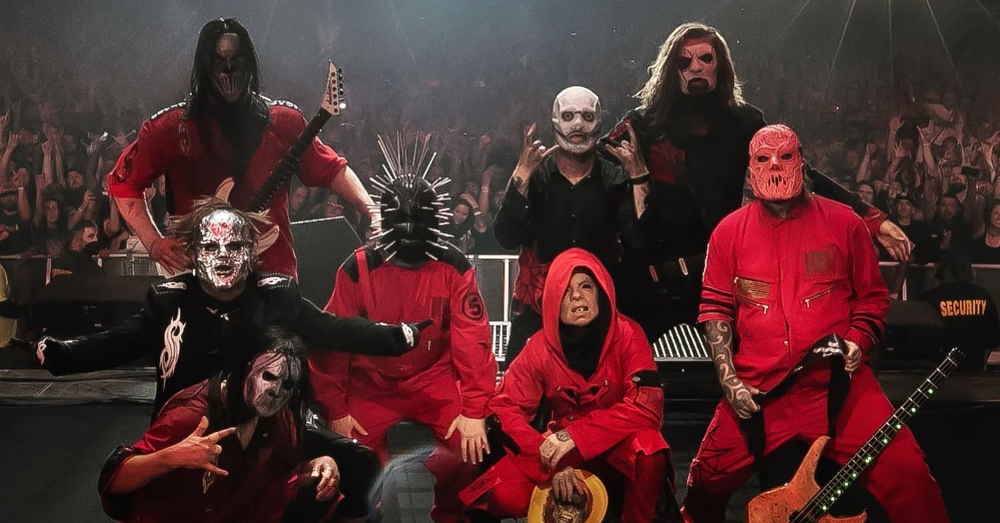

Slipknot - Live em São Paulo
Prepare-se para a noite mais insana do ano!
📍 Informações do Evento
- Data: 12 de Outubro de 2025
- Horário: Abertura dos portões às 17h, show às 20h
- Local: Allianz Parque, São Paulo - SP
♿ Acessibilidade
- Áudio descrição do evento via app e in loco
- Vídeos com intérprete de Libras
- Espaços reservados para cadeirantes
- Mapa tátil disponível
- Legendas em vídeos de divulgação
🎟️ Compre seu ingresso
Comprar Ingressos📽️ Chamada do Evento (com Libras e Legenda)
🎸 Conheça os Integrantes do Slipknot
Corey Taylor - Vocais
Corey Taylor é o vocalista principal do Slipknot. Sua energia única no palco ajudou a banda a se tornar uma lenda no metal.
Curiosidade: Corey também é vocalista da banda Stone Sour e autor do livro *"Seven Deadly Sins".
Jim Root - Guitarra
Jim Root é conhecido por suas riffs pesadas e complexas, sendo fundamental no som único do Slipknot.
Curiosidade: Jim também é membro da banda Stone Sour e é fã de guitarras Fender.
Shawn Crahan - Percussão
Shawn Crahan, ou "Clown", é um dos fundadores do Slipknot e é responsável pela percussão e parte do visual da banda.
Curiosidade: Shawn é um fotógrafo e publicou o livro *"The Apocalyptic Nightmare Journey".
Mick Thomson - Guitarra
Mick Thomson é conhecido por sua técnica agressiva e por criar riffs pesados ao lado de Jim Root.
Curiosidade: Mick é fã de guitarras Jackson e suas performances são intensas e imersivas.
Alessandro "V-Man" Venturella - Baixo
Alessandro é o baixista do Slipknot desde 2014 e se destaca pela técnica e presença de palco.
Curiosidade: V-Man tem uma coleção impressionante de guitarras e baixos vintage e é um fã de tecnologia.